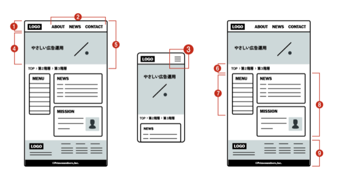

https://drive.google.com/file/d/1-LSHsthlWk3atoCnZMLK1ibQObJFZXIx/view?usp=sharing
※動画は1本につながっています。1番の動画から再生すれば順番に視聴することができます。
※チャプターにジャンプするリンクが機能していないので、下の動画から必要な時間へ手動でジャンプしてください。
※ネコ、犬以外の写真でもOK
以下の操作ができるようになったか確認しましょう
ポートフォリオサイトとは、個人や企業が自分の作品やプロジェクト、スキルを展示するためのウェブサイトのことです。主にクリエイティブな職業、例えばデザイナー、アーティスト、フォトグラファー、ライターなどが自分の作品をまとめて紹介するために利用します。
→ 一言で言うと、自己紹介サイト
ペルソナ＝ターゲットとなる人
今回の場合、作成したWebサイトを見てほしい人、見る予定の人を指します。
一般企業のWebサイトであれば、次のような内容で作られています
情報 → 何かを判断し、行動を起こさせるもの
制作したWebサイトを見る → 判断し行動を起こさせる
Webサイトを見た人にどういう行動を取って欲しいのか？
例）若い20代の女性に、この製品を購入してもらいたい
例）10代の中高生に学習してもらい、英語の点数を上げてほしい
この視点でWebサイトを見てみると、前回のプロが作ったWebサイトもそれぞれの意図が見えてくるはず...
とし...
ここで気をつけることは、このWebサイトを見た人すべてに友達になってもらう必要はありません。
また、通常のポートフォリオサイトであれば、これまで制作した作品などを並べたりしますが、今回の課題ではあなたのこれまでの経験や趣味、得意なこと...などあなたを理解してもらえるような情報を掲載します。
例えば「ポケモンが好きな人」と友達になりたい...というのであれば、ペルソナに「ポケモンが好きな人」という項目が追加されます。ですので、上記のペルソナに対してペルソナを追加してみましょう。
【参考】
実際に企業などがペルソナを設定するときに検討する要素
・年齢
・性別
・居住地域
・住居情報（持ち家、実家、賃貸など）
・職業
・年収
・家族構成
・趣味
・よく使うSNS
・よく見るYouTubeチャンネル
・よく買い物をするスーパー
・好きなマンガ...など
この後の説明で出てくるものがあります。知っておきましょう。

https://primenumbers.co.jp/blog/design/web-design-basic/
【デモサイト:完成予想】https://maayastudio.studio.design/
※個人情報は載せないでください。
※動画は1本に繋がっているので、先頭から最後まで視聴すれば12番目まで見ることができます。
※チャプターにジャンプするリンクが機能していないので、下の動画から必要な時間へ手動でジャンプしてください。
https://drive.google.com/file/d/1-K9gELC1Z8mPI8r-pZdlry3SkemTJliQ/view?usp=sharing
●メインビジュアル
自分のものに修正しましょう
●About me
自分のものに修正します。
今の自分を100文字程度で紹介しましょう。
●Works
これまでの作品などをここでは紹介できないのでMy Favoriteとして自分の好きなものを紹介しましょう。
●Skills
項目をSkillsから「得意な教科」「苦手な教科」のどちらかに変更して紹介しましょう。